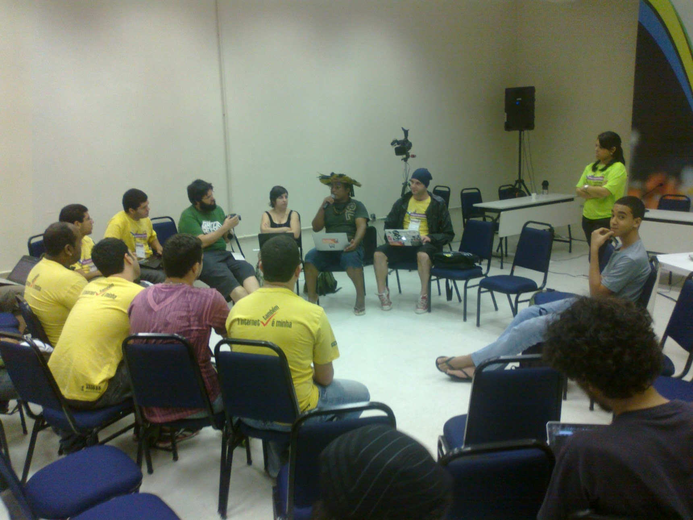

O Segundo Fórum de Internet no Brasil, em Olinda, movimentou a lista entre os dias 3 a 6 de junho de 2012. Da carta de Olinda, em Defesa ao Marco Civil da Internet no Brasil ao encontro com a Rede Mocambos, muitos assuntos surgiram, nem todos foram documentados. Regis fez registros fotográficos e subiu em seu flickr, Marcos Egito compartilhou algumas fotos também (a que segue é de sua autoria).

Perguntamos para algumas pessoas:
O que foi o II Fórum da Internet para você?
E vamos atualizar as respostas por aqui, a medida que elas chegarem :)